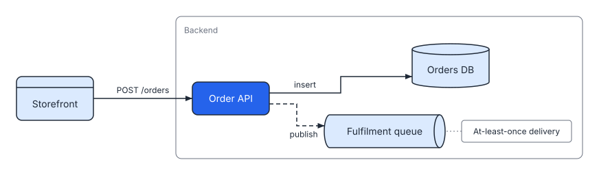

Describe a diagram once. Get an SVG that checks out.
SVGDog turns a short YAML spec into a clean SVG, then checks it against 38 rules for layout, portability and accessibility. One binary, no network, the same output on every run.

Pick the guide that fits your job
Three short books, one for each way of working with SVGDog. Each one points you to the others when you need them.
For everyone
User guide
Describe a diagram, render it and fix what the checker finds. Plain language, about ten minutes to your first picture.
- Quick start
- Four diagram types, with examples
- Preview, validate and fix SVGs
For operators and developers
Operator guide
How SVGDog works inside, every command and setting, and how to run it in CI.
- Layout, routing and the rule engine
- CLI, spec, config and MCP reference
- CI recipes and troubleshooting
For testers and contributors
Tester guide
How every change is checked, and how to add a test of your own.
- Running the test suite
- Golden files and CI gates
- Adding tests and exploring by hand